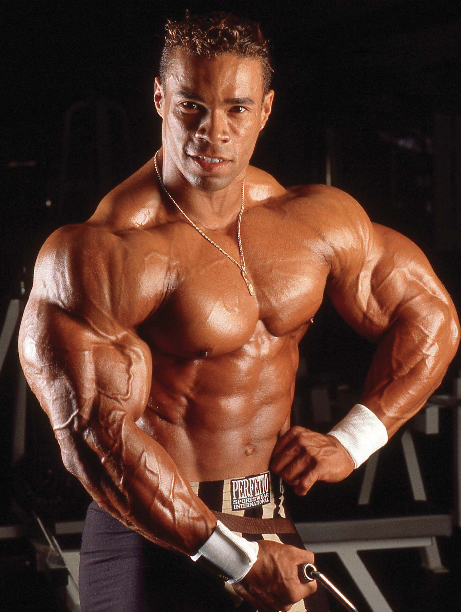

Testépítés
A gyúrás és a testépítés két különböző dolog. Az egyik lehet hobbi vagy sport, a másik viszont életforma, tudomány és komoly sportteljesítmény.
A testépítő edzés alapja a test és a szellem kapcsolata. Az izmok tudatos használata, az ideg–izom kapcsolat fejlesztése és a testarányok folyamatos finomítása.
Amikor elhatározzuk, hogy a testépítést választjuk, nem árt tisztában lenni azzal, hogy az mit is jelent és mit kell megtennünk érte.
Mert elérni egy sportbeli célt fantasztikus dolog, de itt nincs és nem is lehet vége. Nincs befejezve. Hiszen a fenntartás is melós. Viszont azt itt mindenképpen hozzá kell tegyem, hogy – habár edzésmunkának hívják – igazából ez nem munka. Ez puszta élvezet. Némi fájdalommal fűszerezve. Hiszen mindannyian tudjuk, hogy fejlesztési céllal edzeni az nehéz és fájdalmas dolog. Nem csak az elején, amíg belejön az ember. Sőt! Mindig… De ez egy szerethető folyamat. Mi, akik ebben élünk, mi imádjuk…
Egész egyszerűen végig kell gondolni, hogy mit is csinálunk éppen. Saját magunkkal foglalkozunk. A testünkkel. Az izmainkkal. Az edzés (és igazából bármi) csak akkor lehet eredményes, ha teljes mértékben odafigyelünk arra, amit csinálunk. Itt nincs duma, nincs telefon, nincs más. A megfelelően kiválasztott zene az egyetlen, ami megfér. Elképesztő módon motiválhat is. Befelé kell figyelni. Természetesen a megfelelően kivitelezett gyakorlat-végrehajtás mellett. És itt a másik fontos tényező.
A kivitelezés
A gyakorlatokat meg kell tanulni ahhoz, hogy egyáltalán esélyünk legyen eljutni odáig, hogy tudatos izom-összehúzódást tudjunk produkálni, ami ennek az edzésformának az egyik alapja. Itt szoktam felhozni a bicepszes példát: nem mindegy, hogy behajlítom a karomat és összehúzódik a kétfejű karhajlító izmom, vagy tudatosan összehúzom a bicepszemet és ebből kifolyólag behajlik a karom.
A testépítésben tudnunk és éreznünk kell a testünket és azon belül az izmainkat.
A főbb izomcsoportjainkat külön-külön is. Hiszen hogyan fogok például hátsó deltát erősíteni és/vagy növelni, hátsó delta összehúzódás nélkül. Pont egy kényes terület, ezért is hoztam fel. Ismernünk kell a gyakorlatokat, mozdulatokat ahhoz, hogy ismerjük a testünket, izmainkat. Mindez teljes mértékű odafigyelés és tanulás nélkül nem fog menni.
Idő
A saját magunkra fordított idő. Amikor az ember elmegy edzeni, akkor lényegében saját magára fordít időt. Akkor már nem lehet kérdés, hogy az embernek arra van ideje, amire szán.
Ilyenkor jönnek a kifogások rendszerint, amire én annyit tudok és fogok reagálni, hogy „akkor kelj fel 3-kor. Vagy 4-kor. És máris ott lehet akár 2 óra hossza magadra.” Ha fontos. De ha magamnak én nem vagyok annyira fontos, hogy egészségesen és erősen tartsam, illetve ilyenné tegyem magam, akkor mi más lehet eléggé vagy nagyon fontos? A család is csak egy egészséges Anyukával, Apukával vagy bármelyik családtaggal lehet boldog, teljes.
Viszont nagyon nem mindegy, hogy a saját magunkra fordított időt hogyan töltjük. A testépítéshez (de igazából mindenhez), mint már említettem, tudnunk kell, mit csinálunk, vagy legalább azt, hogy hogyan jutunk el addig, hogy tudjuk. Onnantól kezdve kezdhet el megtérülni a ráfordított idő.
A magunkra fordított idő MINDIG MEGTÉRÜL. Mindig megéri. A megfelelő minőségű idő persze.
Amikor a mindennapi étkezéseinket szeretnénk tudatosabban összeállítani, egyre gyakrabban kerül elő a kérdés, hogyan tudunk elegendő fehérjéhez jutni. Egy kiegyensúlyozott étrendben a fehérje kiemelt szerepet kap, hiszen ez a tápanyag segít abban, hogy energikusabbak legyünk, jobban teljesítsünk az edzéseken, hatékonyabban regenerálódjunk, és hosszú távon megtartsuk az izmainkat. Nekünk, akik szeretnénk jól működő, fenntartható étrendet kialakítani, különösen fontos megérteni, miből tudunk minőségi fehérjét nyerni, és hogyan építhetjük be mindezt természetes, egyszerű módon a napjainkba.
A magas fehérjetartalmú ételek választéka ma már hatalmas, és nem csak sportolóknak fontos a megfelelő bevitel. Ha jól válogatunk, sokkal stabilabb lesz az energiaszintünk, ritkábban leszünk éhesek, és könnyebben tudjuk úgy összeállítani az étrendünket, hogy az tényleg illeszkedjen a céljainkhoz. Akár teljes értékű ételekben gondolkodunk, akár étrend-kiegészítőkben – például minőségi fehérjék alkalmazásában vagy praktikus fehérjeszeletek fogyasztásában – mindig az a cél, hogy olyan megoldásokat válasszunk, amelyek valóban támogatnak minket.
Ez az útmutató abban segít, hogy átlássuk a lehetőségeinket: melyek a legjobb magas fehérjetartalmú ételek, miért van ekkora szerepük, hogyan állíthatjuk össze köréjük a napi étrendünket, és milyen növényi alternatívákból tudunk válogatni akkor, ha változatosságra vagy tudatosabb étkezésre törekszünk.
Miért olyan fontos a fehérje?
A fehérje egyetlen funkciója sem pótolható más makrotápanyaggal, ezért nélkülözhetetlen a szervezetünk számára. A fehérjék nemcsak az izomzat, csontok, kötőszövetek, haj alkotórészei, hanem az egészség fenntartásához is szükségesek. A proteinek a hormonok, enzimek alkotórészei, transzportfolyamatok segítői és az immunrendszer felépítésében is szerepük van. Ha nem jutunk hozzá eleget, azt jó eséllyel már néhány napon belül érezni kezdjük: fáradékonyabbak leszünk, kevésbé terhelhetők, lassabban regenerálódunk, és sokszor az étvágyunk is ingadozik.
A fehérje többek között:
- támogatja az izomépítést és az izommegőrzést
- stabilizálja a vércukorszintet, így kevésbé leszünk éhesek
- segít a regenerációban és a szövetek helyreállításában
- elősegíti a megfelelő hormonműködést
- támogatja az immunrendszert
- hosszabb ideig biztosít teltségérzetet
Az edzésekhez, testsúlyszabályozáshoz, aktív életmódhoz vagy csak egyszerűen a jó közérzetünkhöz szükségünk van rá. Minél inkább természetes alapanyagokra és jól megválasztott fehérjeforrásokra támaszkodunk, annál könnyebb fenntartani a napi adagot anélkül, hogy túl bonyolulttá válna az étrendünk.
Mivel a fehérjéket táplálkozás útján tudjuk biztosítani a szervezetünk számára, így kiemelkedően fontos, hogy ne csak az energiabevitelt nézzük az étkezéseknél, hanem az ételek összetételét is. Azt pedig, hogy melyik élelmiszer mennyi fehérjét tartalmaz, egy fehérje táblázat segítségével könnyen megtudhatjuk. Egy ilyen táblázat óriási segítség az ételek kiválasztásához és egy egészséges étrend kialakításához. Emellett persze azt is ismernünk kell, hogy a mi szervezetünknek mennyi fehérjére van szüksége az optimális működéshez.
Fehérjeforrások
Hús, baromfi, tojás
Halak
Hüvelyesek

Diófélék és magvak
Tejtermékek